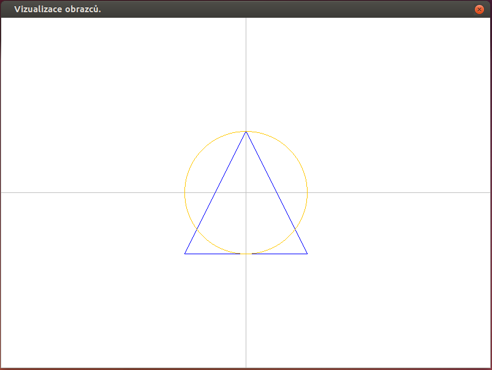

cz.muni.fi.pb162.project.demo.DrawExtra01
Vertex2D následujícím způsobem:
- Přidejte konstruktor, který bude mít dva parametry s hodnotami souřadnic X a Y.
- Zrušte settery. Již nebudou potřeba, protože souřadnice se nastavují konstruktorem při vzniku objektu. Tímto se zajistí, že souřadnice nelze měnit.
-
Přidejte metodu
distance, která vezme jiný 2D bod jako vstupní parametr a vrátí jeho euklidovskou vzdálenost. Vzdálenost bodů se vypočítá jako
Pokud je vstupní argumentnull, pak metoda vrátí hodnotu-1.0jako indikátor chyby (euklidovská vzdálenost je vždy >= 0). -
Pozn.:V Javě se odmocnina vypočítá pomocí volání
Math.sqrt().
Triangle následujícím způsobem:
- Přidejte do třídy konstruktor, který bude mít tři parametry s vrcholy A, B a C.
- Opět zrušte všechny set metody (gettery ponechte). Tímto se opět zajistí, že vrcholy trojúhelníka nelze změnit.
-
Upravte metodu
divide()tak, aby šla přeložit. -
Upravte metodu
toString()tak, aby nemohla zhavarovat naNullPointerException. Pokud některý z vrcholů chybí, vrátí metoda textový řetězec "INVALID TRIANGLE". - Přidejte metodu
boolean isEquilateral(), která vrátítruejestliže je trojúhelník rovnostranný. Protože pracujeme s reálnými čísly, nelze jednoduše porovnat délky stran např. pomocíd1 == d2. Je nutné použít test, který bude považovat dvě reálná čísla za shodná, pokud jsou dostatečně podobná např. takto:Math.abs(d1-d2) < 0.001
kde0.001je tolerovaná odchylka. -
Pozn. pro cvičící: Vysvětlete problém porovnávání reálných čísel
a s tím související výraz
Math.abs(d1-d2) < 0.001.
Demo tak, aby využívala nové konstruktory (tj. tak, aby šla třída přeložit).
Circle.
-
Třída bude mít konstruktor se dvěma parametry (v tomto pořadí):
střed typu
Vertex2Da poloměr typudouble. - Třída bude mít dále bezparametrický konstruktor, který vytvoří jednotkovou kružnici se středem v počátku souřadného systému (tj. střed [0,0], poloměr 1). Bezparametrický konstruktor bude volat předchozí konstruktor s parametry a předá mu potřebné konstanty!
-
Pro poloměr a střed vytvořte gettry
getRadius()agetCenter(). -
Metoda
toStringbude vracet řetězec ve formátu"Circle: center=[x, y], radius=<radius>", kde[x, y]jsou souřadnice středu a<radius>je poloměr.
Draw
se na obrazovce vykreslí následující obrázek:

Požadovaný výstup.
Požadovaný výstup.